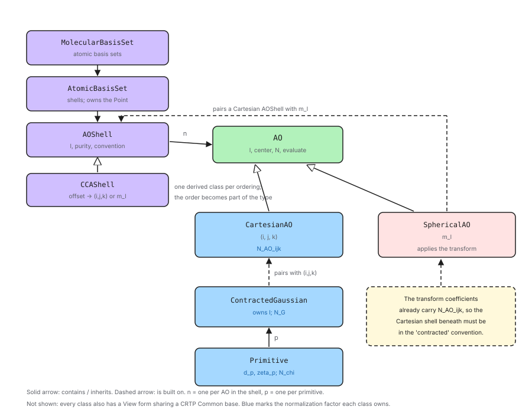

Designing the AO Class Hierarchy
This section contains notes on the classes which represent an AO basis set.
What are we representing?
AO Basis Set Background describes an AO as a layered object: primitive Gaussians \(\chi_p\) combine into a contracted Gaussian \(G\), which is combined with a Cartesian polynomial to give a Cartesian AO. Optionally, a spherical AO can be formed by taking a linear combination of Cartesian AOs. AOs (Cartesian or spherical) sharing a contracted Gaussian and a total angular momentum form a shell, shells sharing a center are an atomic basis set, and the collection of all atomic basis sets is the molecular basis set.
The classes in this component mirror that structure one-for-one, so that each concept in the background page has a class and each relationship between concepts is a relationship between classes.
Why make the AOs explicit?
Historically the AOs in a shell have been stored implicitly. A shell records a total angular momentum, a purity flag, and the parameters for the contracted Gaussian.
This leads to several problems:
First, it leaves the count of AOs and the identity of AOs in two different places. A shell can say how many AOs it has, but not what the third one is. Every consumer which cares about individual AOs — and real-space evaluation, property calculations, and anything reporting per-orbital quantities all care — ends up reimplementing the mapping from offset to angular momentum, and each implementation is an opportunity to order them differently.
Second, it makes normalization inexpressible. As Designing Basis Set Normalization shows, one of the three factors depends on the individual Cartesian powers, so it differs between the AOs of a single shell. With no object per AO there is nowhere to put that factor, which is precisely why the prevailing convention drops it.
AO Class Hierarchy Considerations
Topics in this section were considered in designing the class hierarchy and ultimately were addressed by the design.
- Explicit AOs
An AO should be an object, not an offset.
It should be possible to obtain the \(n\)-th AO of a shell, of an atomic basis set, or of a molecular basis set, and to ask that object about itself.
An AO should be able to report its own angular momentum: the Cartesian powers \((i,j,k)\) if it is Cartesian, the component \(m_\ell\) if it is spherical.
- Two kinds of AO, one interface
Following from Explicit AOs, Cartesian and spherical AOs are not the same kind of object, but most code does not care which it has.
A Cartesian AO is a contracted Gaussian paired with a monomial. A spherical AO is a linear combination of the Cartesian AOs of its shell. They are built differently and carry different state.
Nevertheless both are AOs: both have a center, a total angular momentum, a normalization constant, and a value at a point. Code wanting only those should not have to know which kind it holds.
So the two need a common base, with the differences confined to the derived types.
- An AO is built by composition
Following from Two kinds of AO, one interface, each kind of AO is built by pairing something shared with an index that selects one function out of it.
A Cartesian AO pairs a contracted Gaussian with the powers \((i,j,k)\).
A spherical AO pairs the Cartesian shell of its angular momentum with the component \(m_\ell\).
Both pairings are constrained to agree on \(\ell\).
- The spherical transform assumes a convention
Following from An AO is built by composition, a spherical AO is defined by coefficients multiplying Cartesian AOs, and those coefficients are not convention-free.
The standard transformation coefficients 4 have \(N^{AO}_{ijk}\) built into them, so they assume the Cartesian AOs they multiply are normalized only up to \(N^{G}\).
Handing them Cartesian AOs which are individually normalized applies \(N^{AO}_{ijk}\) twice, which is silent and wrong.
Whatever owns the transform must therefore also know, and be able to guarantee, the convention of the Cartesian AOs it is transforming.
- Angular momentum is stored once
Angular momentum in primitive establishes that a primitive needs \(\ell\) in order to normalize itself. Every primitive in a contraction shares that \(\ell\).
Storing \(\ell\) in each primitive would duplicate it, with the usual risk of the copies disagreeing.
It should be stored once per contraction, with primitives reaching it rather than owning it. A primitive which is not part of a contraction has nothing to reach, and must own its own.
- The center is stored once
All the AOs on a center are centered on the same point, and that point moves when the atom does.
The center should be stored once per center, not once per primitive.
Lower levels of the hierarchy should see it rather than own it, so that moving the center moves everything built on it.
- AO ordering is part of the design
Tensors in an AO basis inherit their index ordering from the basis set, so two tensors are only compatible if their bases agree on the order of the AOs.
The order in which a shell enumerates its AOs must be defined, documented, and stable.
It must match what the integral libraries expect, since a reordering applied to only one of the two would be silent.
There is no single right answer. Codes disagree, and libint alone can be built against several mutually incompatible choices, so the design must accommodate more than one rather than picking one and hard-coding it.
Because a mismatch is silent, the ordering is worth making visible to the type system rather than leaving it as a runtime property to be checked, or not checked, by each consumer.
- Each level owns its normalization factor
Designing Basis Set Normalization factors the normalization constant into one term per layer of the hierarchy.
Each class should own the factor its layer introduces, so that the factorization and the class structure agree.
The convention in force is a property of a shell, since a shell is the smallest object owning a complete set of AOs sharing a radial part.
- Value and view semantics
Following from The shared part is shared, not copied, most of what a caller handles will be an alias into something larger rather than an independent object.
Every class in the hierarchy needs both an owning form and an aliasing form, with the same API.
The shared API should be written once rather than once per form, and should not cost a virtual call, since which form a caller holds is always known at compile time.
This is the same pattern, and the same reasoning, as Designing the Point Component.
- Flattening
Much of the infrastructure which consumes basis sets is function-based and operates on flat arrays of primitives.
Each level of the hierarchy should be able to present the primitives beneath it as a flat sequence, regardless of the nesting.
Out of Scope
Topics in this section were considered, but do not play a role in the current design.
- General contractions
The design assumes segmented contractions: each contracted Gaussian owns its primitives, and shells do not share them. General contractions would need a class parallel to
AOShellwhich is keyed into the sharing.- Mixed purity within a shell
A shell is either Cartesian or spherical. Shells which mix the two are not represented.
- Effective core potentials
ECPs are basis-set-specific state which would most naturally attach to
AtomicBasisSet, but are not represented.- Non-Gaussian AOs
The hierarchy is specific to Gaussians. Slater or numerical orbitals would need their own radial types, though the radial/angular split and the AO layer above it would carry over.
- Vector space behavior
These classes will also participate in the
quantum_mechanicscomponent, so that matrix elements can be requested over them. That is the subject of a separate page and is not designed here.
AO Class Hierarchy Design

Fig. 9 Classes comprising the AO basis set component, and how a shell shares one contracted Gaussian across its AOs.
Fig. 9 shows the classes and their relationships.
The radial classes
Primitive holds a contraction coefficient \(d_p\), an exponent
\(\zeta_p\), a center, and the angular momentum \(\ell\) it is to be
paired with. It owns the factor \(N^{\chi}(\zeta_p; \ell)\).
ContractedGaussian is a container of Primitive objects sharing a center
and an \(\ell\). It owns the factor \(N^{G}(d, \zeta; \ell)\), which
per Designing Basis Set Normalization depends on the whole contraction
at once and so could not belong to any one primitive.
Per Angular momentum is stored once, \(\ell\) is stored by the
contracted Gaussian, and the Primitive objects a contracted Gaussian hands
out are views which reach it. A standalone Primitive value owns its own
\(\ell\). The same applies to the center, per
The center is stored once: it is owned at the AtomicBasisSet level and
seen by everything below.
The AO classes
Per Two kinds of AO, one interface, AO is an abstract base with two concrete
derived classes. The base provides what every AO has regardless of kind:
the total angular momentum \(\ell\),
the center,
the contracted Gaussian it is ultimately built on,
its normalization constant,
its value at a point,
together with the usual clone and comparison, matching the idiom already
used by VectorSpace and OperatorBase elsewhere in Chemist. Code which
only needs those never learns which kind it holds.
CartesianAO pairs a ContractedGaussian with the powers
\((i,j,k)\), which is the pairing of An AO is built by composition. It reports
those powers, and it owns the factor \(N^{AO}_{ijk}\), which per
Designing Basis Set Normalization is the only factor distinguishing the
members of a shell.
SphericalAO pairs a Cartesian AOShell with a component
\(m_\ell\). It reports \(m_\ell\), and its value is the linear
combination
from AO Basis Set Background, taken over the Cartesian AOs of that
shell. The coefficients \(c^{(ijk)}_{\ell m}\) are a fixed function of
\((\ell, m_\ell, i, j, k)\) and are computed rather than stored, so a
SphericalAO adds only \(m_\ell\) to the shell it references.
The two derived classes are therefore the same shape: something shared, plus an index selecting one function out of it. What differs is what is shared — a contracted Gaussian in one case, a Cartesian shell in the other.
Per The spherical transform assumes a convention, a SphericalAO is only meaningful if the
Cartesian shell beneath it is in the contracted convention, since the
coefficients it applies already carry \(N^{AO}_{ijk}\). Because
SphericalAO holds that shell and the shell records its convention, this is
checkable rather than assumed, and is checked on construction.
Note this also means a SphericalAO reaches its contracted Gaussian through
its Cartesian shell, all of whose AOs share one. The base class accessor is
therefore well defined for both kinds.
The container classes
AOShell is a container of AO sharing a total angular momentum and a
purity. The purity determines both what it contains and what it is built on:
A Cartesian shell holds one
ContractedGaussianand contains the \((\ell+1)(\ell+2)/2\)CartesianAOobjects built from it.A spherical shell holds one Cartesian
AOShelland contains the \(2\ell+1\)SphericalAOobjects built from it.
The second case nests: a spherical shell owns the Cartesian shell its AOs transform, and that Cartesian shell owns the contracted Gaussian. So there is still exactly one contracted Gaussian per shell however deep it sits.
Per The shared part is shared, not copied, neither level copies what it shares. Indexing a
Cartesian shell returns a CartesianAOView whose contracted Gaussian is a
ContractedGaussianView aliasing the shell’s one copy; indexing a spherical
shell returns a SphericalAOView aliasing the one Cartesian shell. Editing
the exponents once is visible through every AO above them.
AOShell also carries the normalization convention in force, per
Each level owns its normalization factor, and can report the product
\(N^{\chi} N^{G}\) which integral libraries expect. For a spherical shell
this is also what The spherical transform assumes a convention requires of the Cartesian shell
underneath it.
Ordering as a type
Per AO ordering is part of the design, AOShell is itself abstract, and its derived
classes are the orderings. The base owns all of the state described above and
all of the behavior which does not depend on the order; what a derived class
supplies is one thing only: the map from an offset within the shell to the
angular index at that offset. For a Cartesian shell that is the powers
\((i,j,k)\); for a spherical shell it is the component \(m_\ell\).
CCAShell implements the Common Component Architecture ordering, which is
what libint calls its standard ordering. Its Cartesian order is generated by
letting \(i\) run from \(\ell\) down to zero and, within each
\(i\), letting \(j\) run from \(\ell - i\) down to zero:
and its spherical order runs \(m_\ell\) from \(-\ell\) to \(+\ell\).
Other orderings become other derived classes. Libint alone can be built against
several — its GAMESS, ORCA, and BAGEL Cartesian orderings, and its Gaussian
solid harmonic ordering, which runs \(m_\ell\) as \(0, +1, -1, +2,
-2, \ldots\) rather than monotonically — and each is a candidate for a class
alongside CCAShell.
Making the ordering a type rather than a stored enumerator is deliberate. Per
AO ordering is part of the design a disagreement about order is silent, and the whole point
of encoding it in the type is that a function which requires one ordering
cannot be handed another. A tensor built over a CCAShell basis and one
built over a GAMESS-ordered basis are not interchangeable, and that is
something the compiler can enforce rather than something each consumer must
remember to check.
The cost is that a container of AOShell can, in principle, hold shells of
different orderings. That is not meaningful, and MolecularBasisSet treats
it the same way it treats a mixture of normalization conventions: it can be
asked whether all of its shells agree, and the answer is part of what makes a
basis set usable with a given integral library.
AtomicBasisSet is a container of AOShell sharing one center, and owns
the Point per The center is stored once. It also carries the basis set
name and atomic number, which are per-center rather than per-shell because
mixing basis sets across centers is not unusual.
MolecularBasisSet is a container of AtomicBasisSet. It reports totals
— numbers of AOs, shells, and primitives — and can be asked whether all of
its shells agree on a normalization convention.
Every container also offers a flattened view of the primitives beneath it, per Flattening.
Factoring the API
Per Value and view semantics, every class above comes as a value/view pair whose
shared API is written once in a CRTP base, exactly as described in
Designing the Point Component. PrimitiveCommon<DerivedType>,
ContractedGaussianCommon<DerivedType>, and so on implement the API in terms
of whatever the derived class provides for reaching its state; the value class
reaches into storage it owns and the view class into storage it does not.
Two kinds of polymorphism are therefore in play, and it is worth being explicit that they are orthogonal.
The value/view distinction is resolved at compile time through the CRTP bases, because which of the two a caller holds is always known statically and a virtual call there would be pure overhead.
The kind distinctions — Cartesian versus spherical at the AO layer, and which
ordering at the shell layer — are resolved through abstract bases. So
CartesianAO and CartesianAOView share one
CartesianAOCommon<DerivedType> and both derive from AO, and
CCAShell and CCAShellView share one CCAShellCommon<DerivedType> and
both derive from AOShell. In each case the CRTP base carries the API and
the abstract base carries the kind.
The two abstract bases are there for different reasons, though. AO is
polymorphic because a shell genuinely does not know which kind of AO it holds
until it is built. AOShell is polymorphic so that the ordering reaches the
type system, per AO ordering is part of the design; code which knows statically that it wants
CCA ordering can say CCAShell and never pay for dispatch at all.
The views compose. A ContractedGaussianView obtained from a
CartesianAOView obtained from an AOShellView still aliases the one
contracted Gaussian in the original shell, and for a spherical shell the chain
simply has one more link in it.
Summary
- Explicit AOs
AOs are real objects, obtainable by indexing a shell, an atomic basis set, or a molecular basis set, and able to report their own angular momentum:
CartesianAOreports \((i,j,k)\) andSphericalAOreports \(m_\ell\).- Two kinds of AO, one interface
AOis an abstract base providing \(\ell\), the center, the contracted Gaussian, the normalization constant, and the value at a point.CartesianAOandSphericalAOderive from it, so code needing only the common interface never learns which kind it holds.- An AO is built by composition
CartesianAOpairs aContractedGaussianwith \((i,j,k)\);SphericalAOpairs a CartesianAOShellwith \(m_\ell\). Both check that the two halves agree on \(\ell\).- The shared part is shared, not copied
A Cartesian shell stores one
ContractedGaussianand a spherical shell stores one Cartesian shell; the AOs above them hold views, so no copies exist to drift.- The spherical transform assumes a convention
SphericalAOholds the Cartesian shell it transforms, and that shell records its normalization convention, so the requirement that it becontractedis checked on construction rather than assumed.- Angular momentum is stored once
\(\ell\) is stored once per contracted Gaussian; the primitives it contains reach it rather than owning it.
- The center is stored once
The center is owned by
AtomicBasisSet; everything below sees it as a view.- AO ordering is part of the design
AOShellis abstract and its derived classes are the orderings, so the order a shell enumerates its AOs in is part of its type.CCAShellimplements the Common Component Architecture ordering; other conventions become sibling classes.MolecularBasisSetcan be asked whether all of its shells agree.- Each level owns its normalization factor
Primitiveowns \(N^{\chi}\),ContractedGaussianowns \(N^{G}\),CartesianAOowns \(N^{AO}_{ijk}\), and everyAOreports its full constant.AOShellcarries the convention.- Value and view semantics
Every class is a value/view pair sharing one CRTP-implemented API, following Designing the Point Component.
- Flattening
Every container can present the primitives beneath it as a flat sequence.